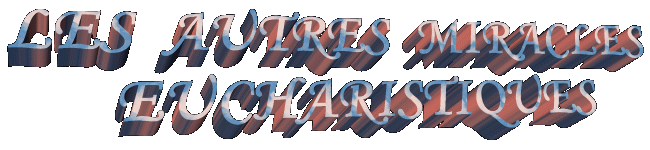

"HASSELT, Belgique, année
1317,
 En 1317, un Prêtre de Viversel qu'il
aidait dans la ville de Lummen, il a été demandé à prendre le Saint Viatique (la
Communion Sacrée aux malades et très âgés) à un homme du village qui était
malade. En prenant un Ciboire avec un Hostie Consacrée, le prêtre est entré dans
la maison et il a placé l'ustensile sacré sur d'une table, tandis qu'il est allé
converser avec la famille et le malade, dans la pièce.
En 1317, un Prêtre de Viversel qu'il
aidait dans la ville de Lummen, il a été demandé à prendre le Saint Viatique (la
Communion Sacrée aux malades et très âgés) à un homme du village qui était
malade. En prenant un Ciboire avec un Hostie Consacrée, le prêtre est entré dans
la maison et il a placé l'ustensile sacré sur d'une table, tandis qu'il est allé
converser avec la famille et le malade, dans la pièce.
Un autre homme qui était dans péché
mortel, probablement quelque parent de la famille, en passant par la Salle et en voyant
le Ciboire, plein de curiosité, il a enlevé la couvercle de couverture et il a
tenu dans l'Hostie Consacrée. Immédiatement l'Hostie a commencé à saigner.
Effrayé, il a joué l'Hostie dans le Ciboire et est sorti de pressé. Quand le
prêtre est venu attraper le Ciboire pour donner la Communion à la personne
malade, il l'a trouvé ouvert! Il a resté surpris aussi au observer que l'Hostie était avec
taches de sang. Dans le moment c'était indécis sur le que faire! Cependant
bientôt il s'a décidé de chercher le Monsieur Évêque et apporter le fait
à son connaissance. Le Berger a perçu qui c'était une manifestation
eucharistique surnaturel et pour cette raison, il l'a recommandé pour amener
l'Hostie Miraculeux à un Tabernacle dans l'Église des religieuses Cisterciens
dans Herkenrode, approximativement 50 kilomètres de distance.
Ce couvent qui est près de Liège, en
Belgique, il a été fondé dans le siècle XII et il appartient les religieuses
Cisterciennes. À cause de la réputation vénérable et remplie de sainteté de
la communauté religieuse, a mené Monsieur Évêque choisir ce local, parce qu'il était
convaincu de qui n'existerait pas un lieu plus adapté pour accueillir l'Hostie
Miraculeux.
Le prêtre a voyagé au le Couvent des SÅ“urs
et aussitôt qu'il est arrivé, il a décrit le s'est passé. Le suivre, il a
accompagné les SÅ“urs dans procession de la entrée de l'Église jusqu'à
l'autel. Quand il a ouvert le Tabernacle pour placer le Ciboire avec
l'Hostie Miraculeux, il a eu une vision du CHRIST couronné avec épines, qu'il a
aussi été vu par les gens présents. Il paraissait être un signe spécial de NOTRE
MONSIEUR, qui manifestait SON Volonté de rester là. Par motif de cette Vision et
par la présence de l'Hostie Miraculeux, Herkenrode s'a rendu un des places les
plus célèbres de pèlerinages en Belgique.
SON Volonté de rester là. Par motif de cette Vision et
par la présence de l'Hostie Miraculeux, Herkenrode s'a rendu un des places les
plus célèbres de pèlerinages en Belgique.
L'Hostie Sacrée est resté à l'Église
dans Herkenrode jusqu'à 1796, temps de la Révolution Française, quand les
religieuses ont été expulsées du Couvent. Sur ce temps terrible l'Hostie a été
confié sous le soin de familles différentes. Il y a une narration qui l'Hostie
est allé jusqu'à accommodée dans une boîte métallique commune et enfoncée dans
le mur de la cuisine d'une maison.
En 1804, l'Hostie a été enlevée du
place de la dissimulation et a été dans procession solennelle pour la Cathédrale
de Sain Quintins dans Hasselt. Le Temple possède une belle architecture Gothique
et il a été construit dans le siècle XIV. Il contient tableaux impressionnants
des siècles XVI et XVII qui ils souviennent l'événements de l'histoire du
Miracle. Mais beaucoup plus important que la construction et la beauté de la
Cathédrale, c'est le Reliquaire avec l'Hostie Sacrée du notable Miracle
Eucharistique qui s'est passé en 1317 qu'elle abrite, dans splendide condition
de conservation. Le Reliquaire a été placé dans un Autel spécial, ouvert à
adoration des fidèles.

"DAROCA, Espagne, année
1239"
 Dans la ville de Daroca, localisée dans
le nord-est d'Espagne, les habitants sont fiers de son passé historique et de
son importance pendant les temps Romains. La ville est protégée par les hauts
murs sur tous les côtés et il possède plus de cent tours pour surveillance et
observation. C'est l'approximativement 75 kilomètres de Zaragoza et il a été
choisi par le SEIGNEUR pour une notable manifestation surnaturel
eucharistique.
Dans la ville de Daroca, localisée dans
le nord-est d'Espagne, les habitants sont fiers de son passé historique et de
son importance pendant les temps Romains. La ville est protégée par les hauts
murs sur tous les côtés et il possède plus de cent tours pour surveillance et
observation. C'est l'approximativement 75 kilomètres de Zaragoza et il a été
choisi par le SEIGNEUR pour une notable manifestation surnaturel
eucharistique.
Le passé de la ville encore paraît
vivant par l'exposition des murs et des châteaux médiévaux, tours, places et
rues conforme le plan Romain de ce temps. Dans les églises et musées
l'inestimable l'art Romain peut être trouvé et aussi l'art des Maures, et aussi
peut être observée la prédominance du style Gothique et l'influence de la
Renaissance.
Toutefois, bien qu'il ait cette totalité
de richesse historique, le plus grand trésor de Daroca c'est la relique des
«Sacrés Corporelles», qui date de 1239, quand le miracle s'est passé.
Pour cette année, quand la ville de Valence était sous le
règne du Roi Catholique Dom Jaime, le roi sarrasin Zaen Moro a décidé de prendre
la ville avec les troupes qui avaient arrivé du nord d'Afrique. Le roi
Catholique en voyant les intentions du sarrasin, et en sachant que la force
militaire l'Espagnol était plus petit, il ordonné offrir une Saint Messe en
plein champ, et a stimulé les soldats aussi bien que le corps des officiers à
aient reçu le Sacrement de la Sacrée Eucharistique. Le Roi Jaime a assuré aux
militaires qui si ils aient été fortifiés spirituellement avec le Corps du
SEIGNEUR, ils pourraient lutter sans peur parce qu'ils recevraient la protection
et l'aide Divine.
Aussitôt qu'il a fini la Consécration
les sarrasins ont fait une attaque de surprise. Le
prêtre qui célébrait la Saint Messe était confus et terrifié avec le rugissement
des canons, les coups, les cries et toute la confusion qui a été formée. Pour
cela, très nerveux, au envers de consommer les six Hostie qu'ils ont
été Consacrées, il les a placé pour sécurité parmi deux Corporelles et rapidement, il
est sorti de l'autel improvisé et il a placé les Hosties sous une pierre à une
petite distance.
Dans un intervalle de la bataille, quand
les sarrasins se ont retiré pour grouper ses forces, les soldats Catholiques se sont agenouillés devant l'autel pour donner grâces à DIEU pour cela la première
victoire qui ils ont atteint. En profitant la opportunité, le prêtre a essayé de
trouver la place où avait caché les Corporelles avec les Hosties. Ainsi que il
a trouvé les Corporelles, bientôt les a ouvert pour le vérifier s'était tout bien
avec les Hosties Consacrées. Il était perplexe avec ce qu'il a vu! Les six
Hosties avaient disparu et ils ont laissé dans ses placer sur le Corporel,
six taches de sang en cercles ! Il avait se passé une notable
manifestation miraculeuse!... Avec pressé, le prêtre a monté à
l'autel improvisé et il a exhibé aux militaires le Corporel avec les taches du
Sang de NOTRE SEIGNEUR, pour vénération et
adoration de toutes.
sont agenouillés devant l'autel pour donner grâces à DIEU pour cela la première
victoire qui ils ont atteint. En profitant la opportunité, le prêtre a essayé de
trouver la place où avait caché les Corporelles avec les Hosties. Ainsi que il
a trouvé les Corporelles, bientôt les a ouvert pour le vérifier s'était tout bien
avec les Hosties Consacrées. Il était perplexe avec ce qu'il a vu! Les six
Hosties avaient disparu et ils ont laissé dans ses placer sur le Corporel,
six taches de sang en cercles ! Il avait se passé une notable
manifestation miraculeuse!... Avec pressé, le prêtre a monté à
l'autel improvisé et il a exhibé aux militaires le Corporel avec les taches du
Sang de NOTRE SEIGNEUR, pour vénération et
adoration de toutes.
Le nouvelle du miracle a circulé léger
et y compris, il est réveillé les jalousies dans les habitants des villes
avoisinantes. Comme la célébration de la Saint Messe a été accomplie dans le
champ, très distant de la ville de Valence, les trois villes: Teruel, Calatayud
et Daroca, ils sont revendiqué que le miracle s'est passé dans ses juridictions
territoriales. Tous les trois villes voulaient être avec la garde des Saints
Corporelles. Le sujet a été discuté pendant longtemps et après
beaucoup des paroles, ils ont décidé que la dispute serait résolue de commun
accord parmi les parties. La résolution serait à travers de la chance que
indiquerait la ville propriétaire des Tissus Sacrés. Encore ils ont combiné que
les Corporelles seraient correctement conditionnés, protégés et placés
sur un mulet. L'animal devrait choisir lequel la direction et la route pour
suivre. Et ainsi, il a été fait! Le mulet après divaguer et faire deux petits
tours, s'a dirigé pour la porte d'enclos de la
 ville de Daroca. Alors Daroca est
allé à ville choisie.
ville de Daroca. Alors Daroca est
allé à ville choisie.
Les habitants heureux avec le
dénouement, ils ont donné les ordres par la construction d'une Église, pour être
le dépositaire des précieux Tissus de Lin. Dans un autel spécial ils ont placé
les deux Corporelles dans cadres avec verre de protection, afin de que les
fidèles aient pu apprécier et adorer les six taches de Sang Sacré du SEIGNEUR.
Maintenant l'Église dans Daroca où sont les Corporelles Sacrés il est dénommé
d'Église de Sainte Marie Collégiale, ou simplement "Le
Collégiale". Dans les murs ils ont été colorés scènes admirables du
miracle, et prochain de l'autel, existent beaucoup d'images et statues faites
d'albâtre dans multicolores, dans le style médiéval.
"FAVERNEY, France, année
1600"
 Le Miracle Eucharistique qui s'est passé
dans Faverney, en France, il a consisté en une démonstration surnaturelle notable
qui surpasse la loi de la gravité.
Le Miracle Eucharistique qui s'est passé
dans Faverney, en France, il a consisté en une démonstration surnaturelle notable
qui surpasse la loi de la gravité.
Faverney est localisée à 20 kilomètres
de Vesoul, dans le Département de Haute Saône, Région Administrative de
"Franche-Comté", 68,7 kilomètres distants de Besançon.
L'Abbaye où c'est l'Église dans laquelle
s'est passé le Miracle, il a été fondé par Sain Gude dans le siècle VIII et
appartenait l'Ordre Ecclésiastique de Sain Benedict. Le Temple a été placé sous
la protection de Notre Dame de la Blanche, représentée par une petite image
placée à droite de l'Autel Principal, dans la Chapelle du Chorale. Dès le sa
fondation, l'Abbaye a été donnée les sÅ“urs-religieuses, mais dans le commencer
de 1132, les moines les ont substitués.
Dans l'année 1600 la vie religieuse des
gens n'avait pas tant de enthousiasme comme devrait être. La difficile
apparition des vocations révélait le manque d'une motivation spirituelle de la
communauté laïque. De l'autre côté, ils habitaient à l'Abbaye seulement six
moines et deux novices. Ils étaient les
responsables pour maintenir la foi des personnes, affaiblies par le terrible
d'influence Protestant. Avec cet objectif, les moines cherchaient toujours,
accomplir toutes les cérémonies traditionnelles constantes du calendrier
liturgique, revêtis avec la plus grande solennité, afin de réveiller la ferveur
spirituelle de la population. Aussi ils cultivaient avec intérêt et fréquence,
la prière du Chemin de la Croix, le prie du Rosaire ou Chapelet, et
l'adoration du Sacrement Très Saint.
Pour la célébration de la Fête de
Pentecôtes en 1608, ils ont installé un magnifique Autel de bois proche à la
Porte d'entrée du Chorale, qui était tout orné avec les belles fleurs. Ainsi,
la cérémonie religieuse accomplie dimanche de Pentecôtes a été jolie et
participée par un grand nombre de fidèles qui ils ont empli le temple. Au soir,
les moines sont allés reposer et ils ont fermé les portes de l'Église, en
laissant deux lampes avec l'huile à éclairer le Sacrement Très Saint dans un
Ostensoir qui il est resté exposé sur l'Autel.
Dans le jour suivant, lundi le 26 mai,
quand le sacristain Don Garnier a ouvert les portes de l'Église, il a observé
qui il y avait beaucoup de fumée et flammes dans quantité, qui montaient partout
de l'Autel. Il s'est dépêché dans informer aux Moines qui immédiatement s'ont
joint aux laïques et avec beaucoup de zèle ils ont essayé de sauver l'Église,
parce que les flammes dévoraient l'Autel violemment et menaçaient de s'étendre
pour consumer le temple. Un des novices appelé Hudelot a été le premier à
observer que l'Ostensoir avec le Sacrement Très Saint, s'est élevées de l'Autel
et il était suspendu dans l'air et que les flammes s'inclinaient et ne
touchaient pas dans lui. Alors, il était en se passant un notable miracle! Les gens qui
étaient à l'Église en aidant par d'éteindre le feu en voyant ce phénomène, ils
étaient impressionnés et les nouvelles ont été répandues rapidement. Les
habitants de la ville, personnes qui résidaient dans
les proximités, les gens de tous les âges sont venus léger par l'Église pour
voir ce qui se passait. Les Moines Capucins de Vesoul au être informés du fait,
ils aussi se sont pressé dans venir observer et témoigner le phénomène qui
continuait. Même en ayant les moines obtenus d'éteindre le feu, le Miracle n'a
pas cessé. L'Ostensoir avec JÉSUS Sacrement a continué le flotter dans l'espace.
Les gens qui arrivaient, s'est agenouillaient dans une démonstration de respect,
de peur et dans signe de l'adoration devant de l'Ostensoir qui était suspendu
dans l'air, inclusivement plusieurs sceptiques, muets, sans mots et sans
discussions, ils aussi s'ont approché pour vérifier ce notable miracle qui se
passait.
l'Église, il a observé
qui il y avait beaucoup de fumée et flammes dans quantité, qui montaient partout
de l'Autel. Il s'est dépêché dans informer aux Moines qui immédiatement s'ont
joint aux laïques et avec beaucoup de zèle ils ont essayé de sauver l'Église,
parce que les flammes dévoraient l'Autel violemment et menaçaient de s'étendre
pour consumer le temple. Un des novices appelé Hudelot a été le premier à
observer que l'Ostensoir avec le Sacrement Très Saint, s'est élevées de l'Autel
et il était suspendu dans l'air et que les flammes s'inclinaient et ne
touchaient pas dans lui. Alors, il était en se passant un notable miracle! Les gens qui
étaient à l'Église en aidant par d'éteindre le feu en voyant ce phénomène, ils
étaient impressionnés et les nouvelles ont été répandues rapidement. Les
habitants de la ville, personnes qui résidaient dans
les proximités, les gens de tous les âges sont venus léger par l'Église pour
voir ce qui se passait. Les Moines Capucins de Vesoul au être informés du fait,
ils aussi se sont pressé dans venir observer et témoigner le phénomène qui
continuait. Même en ayant les moines obtenus d'éteindre le feu, le Miracle n'a
pas cessé. L'Ostensoir avec JÉSUS Sacrement a continué le flotter dans l'espace.
Les gens qui arrivaient, s'est agenouillaient dans une démonstration de respect,
de peur et dans signe de l'adoration devant de l'Ostensoir qui était suspendu
dans l'air, inclusivement plusieurs sceptiques, muets, sans mots et sans
discussions, ils aussi s'ont approché pour vérifier ce notable miracle qui se
passait.
Au long du jour et pendant la nuit les
moines n'ont pas établi aucune restriction, et les spectateurs ont pu visiter
l'Église librement et témoigner le phénomène qui a continué.
Dans le matin du mardi, le 27 mai, le
Miracle restait. Ils sont venus les prêtres des faubourgs environnants et
d'autres villes et ils ont célébré la Saint Messe dans les horaires suivis,
pendant que l'Ostensoir se maintenait suspendu dans l'air. Dans le moment de la
Consécration dans la Saint Messe qu'il était en étant accompli les 10 heures du
matin, par le Prêtre Nicolas Aubry, de la Paroisse de Meneaux, le Prêtre et les
gens qui participaient ont témoigné l'Ostensoir changer de sa place et descendre
doucement sur l'Autel, qui a été construit pou remplacer l'autre que a été
détruit par le feu. Ainsi, la suspension d'Ostensoir est restée pour 33 heures.
Il a été ordonnée par S. Excellence l'Archevêque
Ferdinand de Seigle, dans 31 mai, une investigation sur l'événement. Ils ont été
recueillis cinquante quatre témoignages de moines, prêtres, autorités, hommes et
femmes du peuple.
Le 30 juillet 1608, après avoir étudié
les témoignages et toute la matière rassemblée pendant l'enquête, Monsieur Archevêque a
décidé d'affirmer qu'il s'avait passé en fait, un notable Miracle
Eucharistique.
Aujourd'hui en examinant quelques
détails de l'événement, nous pouvons observer:
 L'Autel était fait de bois et il a été
presque que complètement réduit les cendres, à l'exception des pieds. Il a brûlé
totalement la nappe du lin et le Corporel qu'ils étaient sur la Table de
Célébrations, aussi bien un des lustres qui décorait l'Autel. Le lustre a été
trouvé fondu par la chaleur du feu. Toutefois, l'Ostensoir qui abritait JÉSUS
Sacrement était parfait, mystérieusement conservé de tout dégât. Les deux
Hosties Consacrées qu'étaient dans lui, ils sont restés intacts.
L'Autel était fait de bois et il a été
presque que complètement réduit les cendres, à l'exception des pieds. Il a brûlé
totalement la nappe du lin et le Corporel qu'ils étaient sur la Table de
Célébrations, aussi bien un des lustres qui décorait l'Autel. Le lustre a été
trouvé fondu par la chaleur du feu. Toutefois, l'Ostensoir qui abritait JÉSUS
Sacrement était parfait, mystérieusement conservé de tout dégât. Les deux
Hosties Consacrées qu'étaient dans lui, ils sont restés intacts.
Aussi ils ont été sauvés et ils sont
restés sans quelque dégât quatre préciosités que étaient dans un tube cristallin
pris à l'Ostensoir: 1) une relique de Sainte
Agatha;
2) un petit morceau de soie qui protégeait cette
relique; 3) une proclamation d'indulgences
écrit pour le Sainte Père, le Pape; 4) et
une lettre Épiscopale, dans laquelle la cire du timbre se a fondu et il a couru
sur le parchemin, sans néanmoins altérer le texte.
Vu que l'Église possédait le étage de
bois, aussi ils ont dit que la suspension d'Ostensoir n'a pas été affectée par
les vibrations des gens qui se mouvaient autour pour le meilleur observer le
Miracle, ni des gens qui constamment entraient et laissaient du temple, aussi
bien de l'activité des moines que réalisaient le immédiat déplacement du
matériel brûlé par le feu et de la construction d'un l'autel provisoire. Plus
tard une pierre de marbre avec une inscription a été placée pour marquer la
place du Miracle. Dans elle sont ciselés les mots "le
Lieu du Miracle" - Place du Miracle.
En décembre de 1608, un des deux Hosties
qui étaient dans l'Ostensoir en l'heure de la suspension miraculeuse a été
transférée solennellement pour la ville de Dolle qui était le capital du
Municipe.
Pendant la Révolution Française
malheureusement l'Ostensoir du Miracle a été détruit, mais l'autre l'Hostie
Consacrée a été conservé de tout dégât par membres du conseil municipal de
Faverney qui l'ont caché jusqu'à passer le danger. Alors, ils ont commandé faire
autre magnifique l'Ostensoir où ont placé l'Hostie Sacrée que c'était dans
suspension miraculeuse pour 33 heures. Il est dans parfait état de conservation
et disponible à l'adoration des fidèles dans l'Église de Notre Dame de La
Blanche.
"REGENSBURG, Allemagne,
année 1257"
Pendant beaucoup d'années il y avait
dans Regensburg (autrefois appelée de Ratisbonne) une Chapelle donnée la
protection du Sain Sauveur qui il a une histoire très intéressante sur le
Sacrement Très Saint.
Dans le 25 Mars de 1255, sur un Jeudi de
la Semaine Saint, prêtre Von Dompfarrer Ulrich Dornberg a été mener la Sacrée
Communion Eucharistique à plusieurs membres de la Paroisse qui étaient malades.
Dans la trajectoire il avait qui traverser un petit ravin appelé Bachgasse. Avec
soin il a placé le pied dans une planche de bois qui servait comme pont, pour
passer de un côté par l'autre, mais il a glissé et il a perdu l'équilibre et en
laissant tomber de ses mains le Ciboire avec les Hosties Consacrées, qui s'ont
éparpillé dans la marge du ravin. Et c'est allé avec beaucoup des difficultés
qui il a obtenu recueillir les Particules un à un, à cause de la boue.
Sacrée
Communion Eucharistique à plusieurs membres de la Paroisse qui étaient malades.
Dans la trajectoire il avait qui traverser un petit ravin appelé Bachgasse. Avec
soin il a placé le pied dans une planche de bois qui servait comme pont, pour
passer de un côté par l'autre, mais il a glissé et il a perdu l'équilibre et en
laissant tomber de ses mains le Ciboire avec les Hosties Consacrées, qui s'ont
éparpillé dans la marge du ravin. Et c'est allé avec beaucoup des difficultés
qui il a obtenu recueillir les Particules un à un, à cause de la boue.
Les paroissiens quand ils ont su de
cette qui s'a passé, ils ont décidé dans signe de réparation par l'irrévérence au
Sacrement Très Saint, construire une Chapelle dans la place où les Hosties
Consacrées ont été sales de boue, bien que l'incident n'ait pas été
intentionnel.
La construction d'une Chapelle du bois a
été commencée en le même jour et il a été conclu trois jours après,
c'est-à-dire, alors dans le 28 mars. L'Évêque Albert de Regensburg a dénommé à
la petite structure de bois de Chapelle de Sain Sauveur et il l'a consacré le 8
septembre 1255.
Le fameux Miracle qui a placé Regensburg
dans l'Histoire de l'Église, s'est passé deux années plus tard, exactement dans
cette même Chapelle donné la protection du Sain Sauveur.
Un prêtre dont le nom n'est pas connu,
célébrait la Saint Messe dans la Chapelle, sur chaque le fin de semaine, aux
samedis et les dimanches.
Toutefois il avait un sérieux problème
intime, car il doutait de la Présence Royal de JESUS dans le Sacrement de
l'Eucharistie. Il y avait des occasions dans que la crise de la manque de foi
augmentait tant, qu'il était désorienté, sans raisonner correctement, en célébrant
la Sainte Messe comme si il ait été un robot, sans foi, sans espoir et sans
motivation.
Un certain jour, il est entré dans la
Chapelle pour la célébration et il était avec ses problèmes de foi. Une angoisse
enveloppait son cÅ“ur et plaçait un sourire sarcastique dans ses lèvres, en
révélant une agressive méfiance dans son esprit. Et ainsi, sans aucune
motivation il a commencé la célébration de la Saint Messe.
Devant de l'Autel avait un grand
Crucifix où JÉSUS Crucifié paraissait être vivant. Quand le prêtre a commencé la
Consécration, NOTRE MONSIEUR dans la Croix, IL a étendu la Main et il a enlevé
le Calice des mains du prêtre! Avec l'effroi de l'inespéré il a tremblé et a
reculé un pas, en restant statique et effrayé, en regardant attentivement par le
SEIGNEUR. Un force l'étranger il a parcouru tout son corps en produisant
tremblement et faiblesse dans les jambes, en faisant avec qu'il si prosternât
avec les genoux dans la terre dans signe de profond regret, au même temps dans
que les larmes est descendu de ses yeux. Dans cette moment il a récupéré le son
raison et il a compris la grandeur du péché qu'il avait commis et qu'en
conséquence, c'était nécessaire et urgent le son réconciliation avec le
SEIGNEUR. Il a baissé la tête et intérieurement a prononcé une sincère supplie
de pardon. Il est resté comme était pour quelques minutes. Alors il a cherché à
Face de JÉSUS... Après quelques moments a perçu,
qu'IL voulait lui rendre le Calice avec le Sang Rédempteur. Il s'est levé et
respectueusement a tenu le Calice que le SEIGNEUR a laissé dans ses mains. Les
personnes qui participaient de la Saint Messe étaient impressionnées et émues,
en témoignant tout le Miracle Eucharistique qui bientôt il a été divulgué
intensément partout.
 Après la célébration, le prêtre
respectueusement a baissé les pieds de LE CHRIST Crucifié et a laissé rapidement
la Chapelle. Jamais a été vu. Quelques personnes ont dit qu'il est entré dans un
Monastère dans Ulms et là il est resté reclus jusqu'à sa mort.
Après la célébration, le prêtre
respectueusement a baissé les pieds de LE CHRIST Crucifié et a laissé rapidement
la Chapelle. Jamais a été vu. Quelques personnes ont dit qu'il est entré dans un
Monastère dans Ulms et là il est resté reclus jusqu'à sa mort.
Après le Miracle foules de gens
visitaient la célèbre Chapelle de Sain Sauveur par connaître l'image de LE
CHRIST Crucifié qui s'a manifesté. Avec les donations ils ont réformé totalement
la Chapelle, en renforçant la structure et en construisant avec les grandes
pierres. Quand ils l'ont conclu dans l'année de 1260, ils ont changé son nom
pour "Kreuzkapelle",
parole Allemand qui veut dire "Chapelle
de la Croix" dans honneur au Crucifix Miraculeux qui
dans elle est resté et il était adoré par toutes les
fidèles.
En 1267 un Monastère a été construit
dans une aire à côté de la Chapelle de pierre et elle, c'est allé confiant à
l'Ordre des Aoûtiennes Ermites. En 1542 la Chapelle a été confisquée par les
Luthériens et pendant siècles il a été utilisé comme dortoir. Cependant, les
objets sacrés et LE CHRIST Crucifié a été sauvé et caché, grâces le courage et
la ferme décision des fidèles qui vraiment aimaient l'Église. Et à cause de la
persécution Luthérienne le Crucifix n'a jamais été montré au public et pour
cette raison, avec la séquence des années, il est resté dans l'oubli et
aujourd'hui aucune personne a nouvelles sur lui.
Par l'autre côté, après le long temps
d'occupation pour les Luthériens, la Chapelle a été fermée et il a resté
oubliée. Il a été démoli au temps de la 2ª Grande Guerre Mondiale.
Regensburg est situé dans la Bavaria,
part sud de l'Allemagne, proche à Monique. Dans ce temps il appartenait
l'administration de Monique. Dans les archives de la Curie de l'Archevêché de
Monique ces événements sont enregistrés, mais le nom du prêtre à propos a été
caché.
Page Ensuite
 Page Antérieure
Page Antérieure
Revient à l'Index